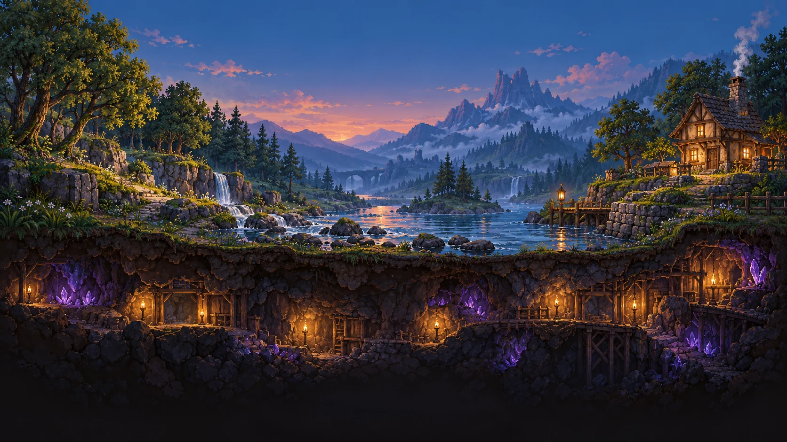
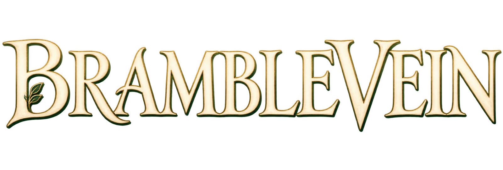
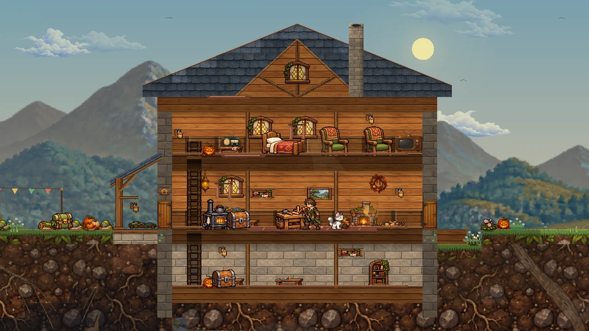
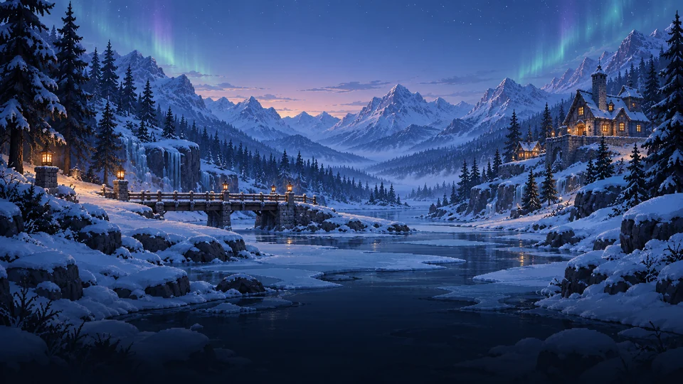
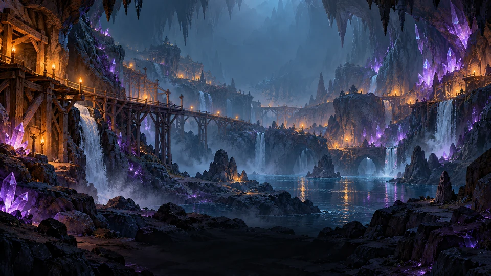
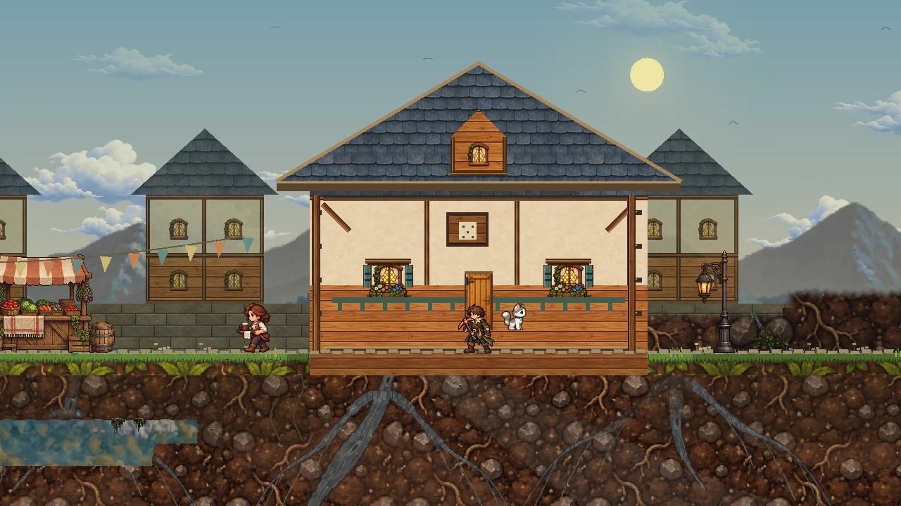
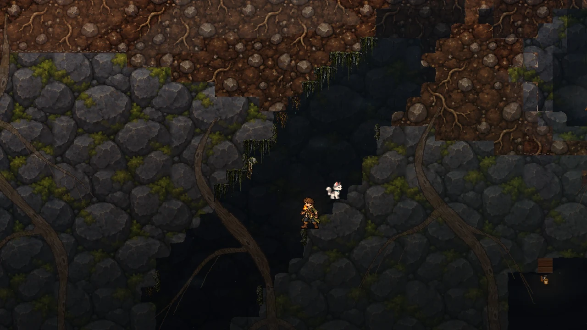

Make & mend
Gather materials, craft your tools, and turn a patch of ground into somewhere that feels like yours.


A 2D sandbox adventure · In development
A warm hearth. A curious cat. A world that keeps going down.
Settle in, then see how far your curiosity takes you.
A place to come back to
Put down roots in a world of timber cottages, warm lanterns, and paths worth wandering. Build, craft, cook, and make room for the things you find along the way.
And you won’t always be alone. Luna, your cat companion, is ready to follow you beyond the front porch.
Take a closer look
Gather materials, craft your tools, and turn a patch of ground into somewhere that feels like yours.
Go fishing, try a recipe, meet the neighbours. Not every good adventure needs to be a rush.
Head underground for resources, discoveries, and the dangers waiting beyond the lantern light.
Beyond the front door
From open shores to frozen peaks and the glow of the deep, Bramblevein’s world has more than one mood.A glimpse through the game’s loading-screen artwork.
Open skies. Quiet shores. A little room to breathe.

Cold blue evenings and a warm window in the distance.

There’s always something beyond the next pool of light.
Through the adventurer’s eyes
Real in-game captures from the current development build. Select an image to explore the details.


Captured with the HUD hidden. Development visuals and features may differ from the public playtest.
Before you set out
Not yet. Bramblevein is in active development. The public playtest is a chance to explore what’s here and help shape what comes next—not a finished release.
Visit Bramblevein on itch.io for the available Windows playtest, current build details, and download instructions.
The game supports solo play and two-player co-op. Check the playtest page for the current build’s setup instructions and known limitations.
Your next little adventure
Leave your boots by the hearth.
Or pick them up and see what’s
out there.
In development · Windows playtest